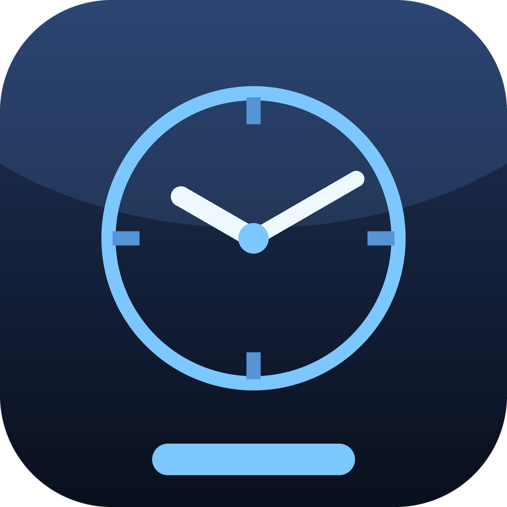
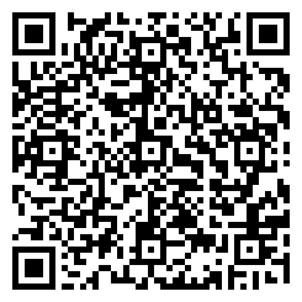

Depois de alguns minutos sem mexer no teclado ou no mouse, o Relógio Vivo aparece na tela com a hora ao vivo e a data em português, deslizando suavemente no centro. Sai com qualquer tecla, clique ou movimento do mouse. Instala sozinho, cria atalhos e pode iniciar junto com o computador.
O download é 100% grátis e vai continuar assim para sempre.
Mas se você gostou do app, você pode pagar R$ 10 no Pix pra ajudar o criador.

Aponte a câmera do app do seu banco para o QR acima,
ou use o copia e cola:
00020126560014BR.GOV.BCB.PIX0134bernardoalvescaetano2015@gmail.com520400005303986540510.005802BR5918BERNARDO A CAETANO6006BRASIL62070503***63040C59